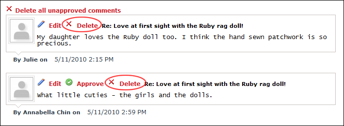

Deleting a Blog Comment
How to delete a comment associated with a blog entry in the Blog module. This task can be performed by bloggers on their own blog or by Administrators on all blogs.
- Locate the required blog entry. See "Viewing Blog Entries for a Month", See "Viewing Blog Entries for a Single Date", or See "Viewing Recent Entries for a Single Blog".
- Click the
 Comments (1) link. This displays the comments associated with the selected entry.
Comments (1) link. This displays the comments associated with the selected entry.

- Click the Delete
 button or the Delete link beside the comment to be deleted.
button or the Delete link beside the comment to be deleted.
- Repeat Step 3 to delete additional comments from this blog entry.